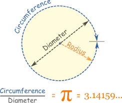

Updated (2018-11-06 )
MySite> General Knowledge> Geometry
- circle circumfrence divided by the circle diameter gives the π (PI) value
- it is the ratio of a circle's circumference to its diameter, approximately equal to 3.14159
- the radian rad is a unit for measuring a circle's angle (1rad = 57.29deg (approximately))
- 1rad = circle radius used as circle circumference distance
- 3.14rad is a half circle, which is 1π (pi)


| Expression | Magyar Kiejtés | Magyar Jelentés |
|---|---|---|
| Equilateral | Ekuilátrl | Egyenlő Oldalú |
| Isosceles | Ájszószilisz | Egyenlő Szárú |
| Scalene | Szkélin | Egyenlőtlen oldalú |
| Acute | Ákjűt | Hegyes |
| Right | Rájt | Derékszögű |
| Obtus | Aobcsüsz | Tompa |

- Sine (sin) Cosine (cos) and Tanget (tan) functions are used to calculate sides of a right-angeled-triangle (triangle with a 90 degree angle), they are basiaclly ratio of sides
- works like magic, you need the length of 1 side and 1 angle (other than the right angle) and you can calculate all the remaining sides (and therefore the perimeter too)
- to remember easily the formulat leran the word SOHCAHTOA = (SineOpositeHypotenuse / CosineAdjacentHypotenuse / TangentOpositeAdjacent)
| Sine / Cosine / Tangent formulas | |||
|---|---|---|---|
| Sine | sineValue = Opposite / Hypotenuse | Opposite = Hypotenuse * sineValue | Hypotenuse = Opposite / sineValue |
| Cosine | cosineValue = Adjacent / Hypotenuse | Adjacent = Hypotenuse * cosineValue | Hypotenuse = Adjacent / cosineValue |
| Tangent | tangentValue = Opposite / Adjacent | Opposite = Adjacent * tangentValue | Adjacent = Opposite / tangentValue |


- Remember : JavaScript works with Radians not degrees!

- sin(35deg) is 2.8 / 4.9 = 0.57 (Hypotenuse is 0.57 times of the Opposite)
- so Opposite = Hypotenuse * sineValue (4.9 * 0.57 = 2.8)
- so Hypotenuse = Opposite / sineValue (2.8 / 0.57 = 4.9)
- cos(35deg) is 4.0 / 4.9 = 0.81 (Hypotenuse is 0.81 times of the Adjacent)
- so Adjacent = Hypotenuse * cosineValue (4.9 * 0.81 = 4.0)
- so Hypotenuse = Adjacent / cosineValue (4.0 / 0.81 = 4.9)
- tan(35deg) is 2.8 / 4.0 = 0.7 (Adjacent is 0.7 times of the Opposite)
- so Opposite = Adjacent * tangentValue (4.0 * 0.7 = 2.8)
- so Adjacent = Opposite / tangentValue (2.8 / 0.7 = 4.0)
Pitagoras' Theorme = in a right-angeled-triangle the square of the hypotenuse is equal to the sum of the squares of the other two sides

.jpg)
- the Eucledian distance is the shortest distance between two vertices
- the Manhattan distance is the distance between two vertices measured along axes at right angles

// Eucledian distance formula --------------------------------------------------------- Math.sqrt( (a1 - b1)**2 + (a2 - b2)**2 +... ) // Manhattan distance formula --------------------------------------------------------- Math.abs(a1 - a2) + Math.abs(a2 - a2) + ...